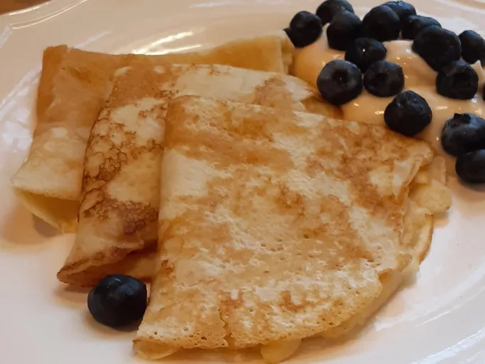

Serbian Palačinke

Description
Palačinke is the Serbian version of crepes. Fill with your favorite filling (cheese, jam, nuts, etc.) and roll up.
Ingredients
- 1 ½ cups all-purpose flour
- 2 tablespoons white sugar
- ½ teaspoon salt
- 4 large egg whites
- 3 cups milk
- 4 large egg yolks
- 3 tablespoons vegetable oil
- 2 teaspoons vanilla extract
- 1 tablespoon butter for the pan, or more as needed
Steps
- Sift together flour, sugar, and salt in a bowl.
- Beat egg whites in a glass, metal, or ceramic bowl until stiff peaks form. Set aside.
- Mix milk, egg yolks, oil, and vanilla extract in a large bowl. Whisk in flour mixture until well combined. Fold in egg whites with a spatula.
- Heat a small piece of butter in a skillet and pour a small amount of batter into the skillet.
- Turn skillet so batter covers the bottom of the skillet.
- Cook until lightly browned on one side, 2 to 3 minutes.
- Flip pancake over and cook on the other side for 1 to 2 minutes more.
- Repeat with remaining batter, always melting a new small piece of butter in the skillet first.